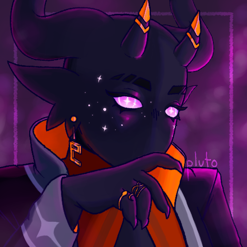

(o_ _)ﾉ彡☆
PLUTO
adult (20+) ☆ they/them

hii i'm pluto, i'm a compsci major and a funny little guy. this site is a WIP!
this site is my attempt to move further from traditional social media, but i can still be found in many, many places. you can check out the top right links for that!
i speak english and some mandarin, though i'm not super good at it lol.
my current interests are minecraft, rain world, and figuring out streaming! i like pretty much all music genres.
my guestbook currently isn't available for mobile, buuuut if you're on PC then pls feel free to leave a comment and we can become website neighbors :]
see you around!